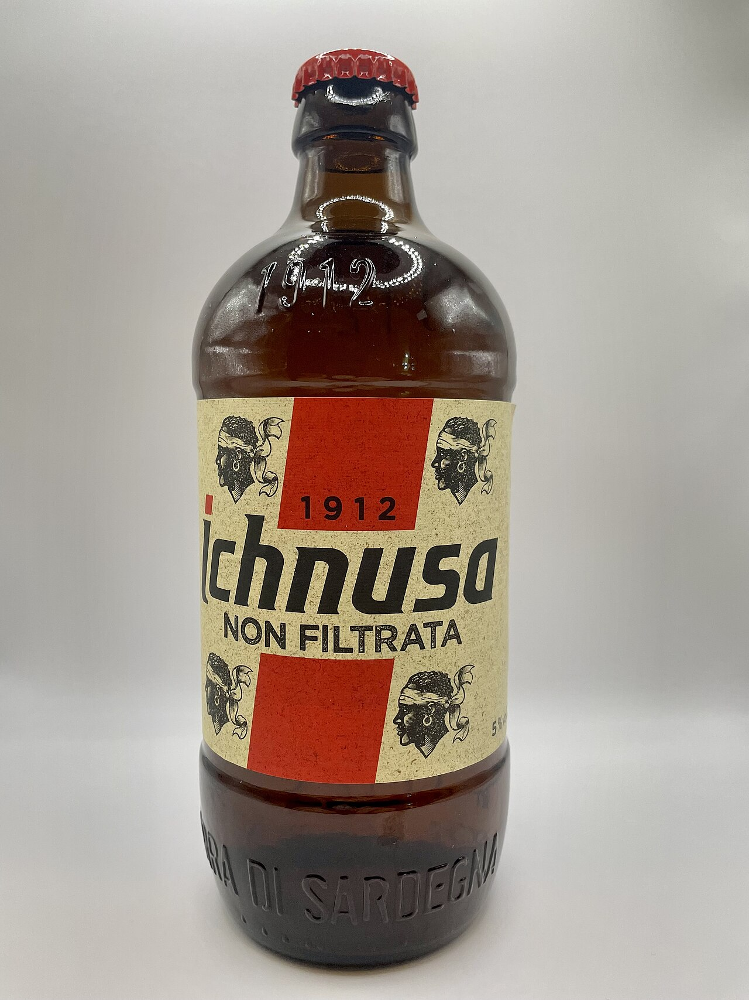
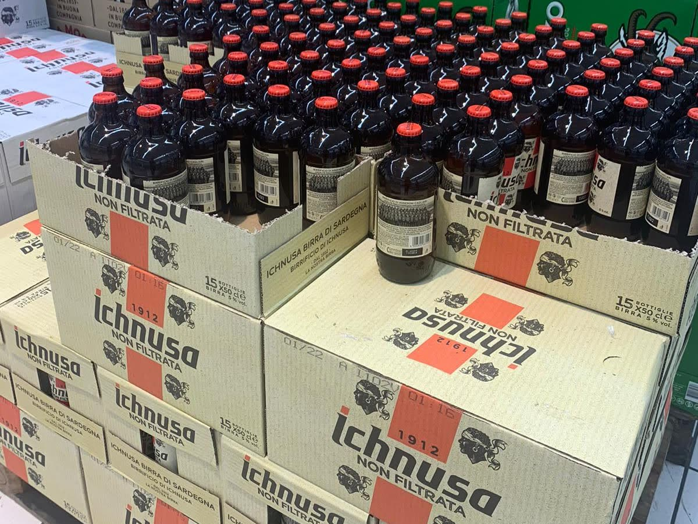

Die besten Biere Sardiniens
Sardinien ist in erster Linie Weinland – aber auch beim Bier hat die Insel einiges zu bieten, angeführt von einer Traditionsbrauerei und einer wachsenden Craft-Beer-Szene.
Ichnusa – das Bier der Insel
Gegründet 1912 in Assemini bei Cagliari, ist Birra Ichnusa die älteste und bekannteste Brauerei Sardiniens. Der Name leitet sich vom griechischen Wort "Ichnoussa" für Sardinien ab. Das klassische helle Lager ("Ichnusa Classica") ist auf der ganzen Insel präsent, dazu kommen Varianten wie das ungefilterte "Ichnusa Non Filtrata" und das würzigere "Ichnusa Anima Sarda". Die Brauerei gehört heute zum Heineken-Konzern, bleibt aber optisch und geschmacklich klar als sardische Marke erkennbar.

Foto: 0Lucky Luke, CC BY-SA 4.0
{kind=link}

Foto: Alessandro Carmeli, CC BY-SA 4.0
{kind=link}
Craft Beer auf dem Vormarsch
Wie auf dem italienischen Festland hat sich auch auf Sardinien in den letzten Jahren eine Szene handwerklich gebrauter Biere ("birra artigianale") entwickelt. Kleinere Brauereien experimentieren unter anderem mit lokalen Zutaten wie Myrte, Kastanien oder Honig – ein Kontrast zum eher klassischen Ichnusa.
Praktische Hinweise
- Ichnusa Classica ist praktisch überall erhältlich – Supermarkt, Bar oder Strandkiosk.
- Craft-Beer-Bars mit lokaler Auswahl finden sich vor allem in grösseren Orten wie Cagliari, Olbia oder Alghero – eine gute Gelegenheit, kleinere Brauereien zu entdecken, die es nicht in den Supermarkt schaffen.
- Zum Essen: Ein helles Lager passt gut zu Pizza oder frittiertem Fisch, während würzigere Craft-Biere sich auch neben einem Teller Käse behaupten.